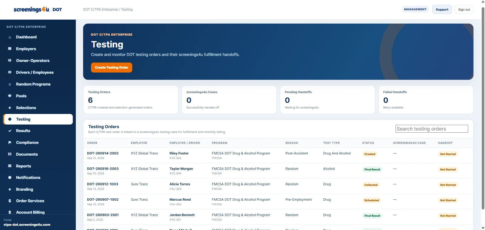

This article focuses on how to organize the work inside a DOT program. It is operational guidance for using a structured workforce and compliance system; it is not a substitute for the rules or official agency guidance that apply to your organization.
Create the order from context
A testing order should start from the worker and program record whenever possible. That reduces re-keying and helps ensure the order carries the correct employer, agency, testing reason, and service type.
Use clear operational statuses
Created, scheduled, collected, pending, and completed are operationally different states. Clear statuses help teams see what needs attention without opening every record individually.
Keep deadlines visible
Time-sensitive testing events should surface collection deadlines and urgency in the work queue. Administrators should not have to rely on memory or separate calendar notes to know which order needs immediate attention.
Attach result handling to the original order
The final result or result summary should remain tied to the original order. That preserves the story of who was tested, why the test occurred, when it moved through the workflow, and what record was ultimately delivered.
Use exceptions as a workflow
Missed appointments, expired deadlines, incomplete collections, or records that need follow-up should become visible exceptions rather than disappearing into email. A managed exception queue is easier to supervise and report on.